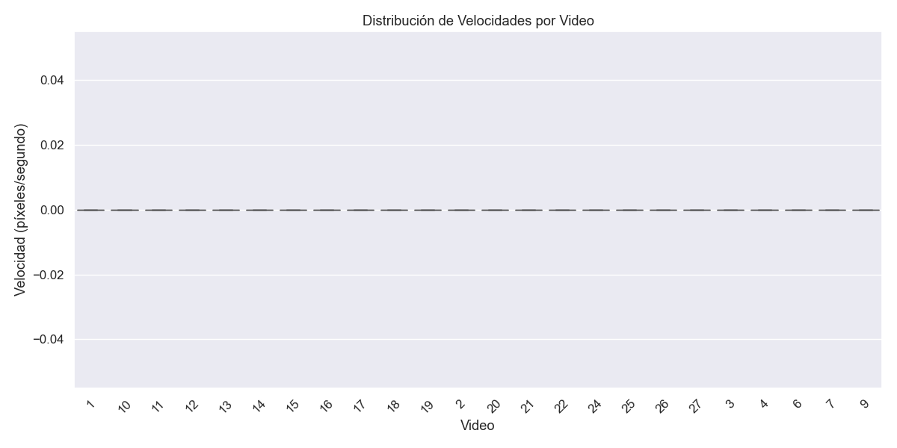
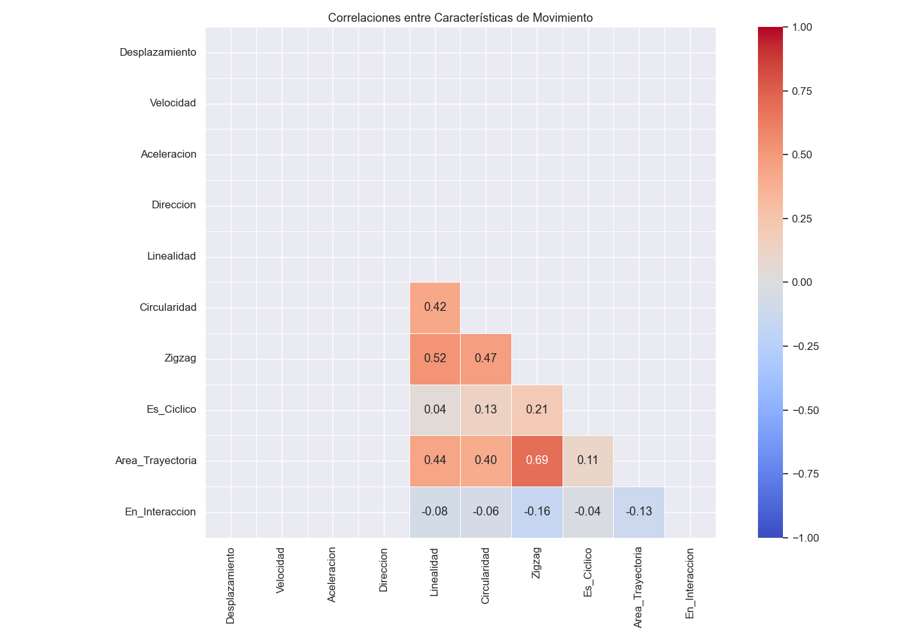
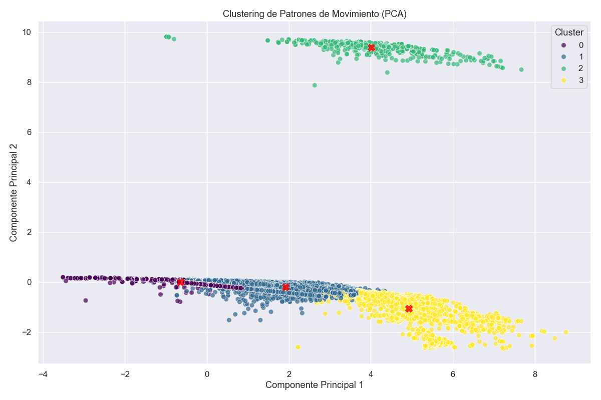
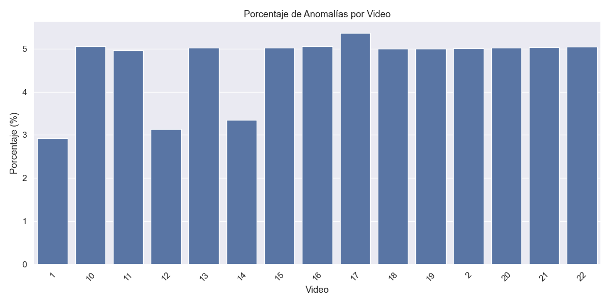
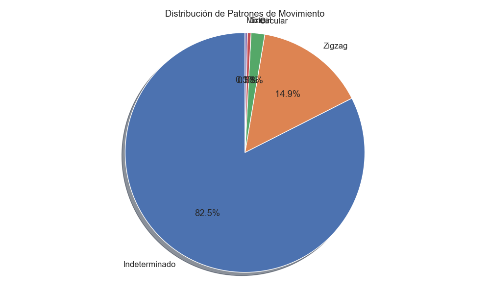

Análisis de Movimientos en Videos
Fecha de análisis: 2025-03-18 15:41
Resumen General
| Métrica |
Valor |
| Total de Videos Analizados |
24 |
| Total de Registros |
67755 |
| Objetos Únicos Detectados |
24324 |
| Velocidad Media (px/s) |
0.00 |
Análisis por Video
| Video |
Frames |
Objetos |
Veloc. Media |
Patrón Dominante |
% Cíclico |
% Interacción |
| 1 |
2694 |
1756 |
0.00 |
Indeterminado |
0.8% |
6.0% |
| 10 |
456 |
342 |
0.00 |
Indeterminado |
12.7% |
10.8% |
| 11 |
501 |
460 |
0.00 |
Indeterminado |
0.0% |
0.4% |
| 12 |
236 |
274 |
0.00 |
Indeterminado |
0.0% |
3.1% |
| 13 |
1293 |
9 |
0.00 |
Zigzag |
8.7% |
0.0% |
| 14 |
6860 |
8930 |
0.00 |
Indeterminado |
0.0% |
5.4% |
| 15 |
722 |
691 |
0.00 |
Indeterminado |
2.2% |
3.7% |
| 16 |
1534 |
996 |
0.00 |
Zigzag |
3.0% |
7.6% |
| 17 |
198 |
2 |
0.00 |
Zigzag |
8.3% |
0.0% |
| 18 |
9977 |
19240 |
0.00 |
Indeterminado |
0.4% |
28.4% |
| 19 |
3271 |
8336 |
0.00 |
Indeterminado |
0.0% |
8.6% |
| 2 |
2476 |
4289 |
0.00 |
Indeterminado |
1.5% |
7.4% |
| 20 |
445 |
446 |
0.00 |
Zigzag |
1.7% |
1.3% |
| 21 |
938 |
1475 |
0.00 |
Zigzag |
1.0% |
11.3% |
| 22 |
438 |
1920 |
0.00 |
Indeterminado |
0.0% |
15.2% |
| 24 |
3 |
3 |
0.00 |
Zigzag |
0.0% |
0.0% |
| 25 |
1 |
1 |
0.00 |
Circular |
100.0% |
0.0% |
| 26 |
3 |
1 |
0.00 |
Circular |
0.0% |
0.0% |
| 27 |
2 |
2 |
0.00 |
Mixto |
0.0% |
0.0% |
| 3 |
2 |
4 |
0.00 |
Mixto |
0.0% |
0.0% |
| 4 |
1 |
2 |
0.00 |
Mixto |
0.0% |
0.0% |
| 6 |
2 |
2 |
0.00 |
Zigzag |
0.0% |
0.0% |
| 7 |
2 |
2 |
0.00 |
Zigzag |
0.0% |
0.0% |
| 9 |
1 |
1 |
0.00 |
Zigzag |
0.0% |
0.0% |
Detección de Anomalías
| Video |
Anomalías |
% del Total |
Frames Destacados |
| 1 |
187 |
2.9% |
351, 745, 420 |
| 10 |
56 |
5.1% |
1, 4, 8 |
| 11 |
50 |
5.0% |
19, 20, 21 |
| 12 |
20 |
3.1% |
21, 22, 31 |
| 13 |
130 |
5.0% |
4, 7, 86 |
| 14 |
548 |
3.3% |
232, 17, 2 |
| 15 |
51 |
5.0% |
22, 228, 74 |
| 16 |
86 |
5.1% |
197, 189, 183 |
| 17 |
11 |
5.4% |
3, 4, 5 |
| 18 |
980 |
5.0% |
1, 455, 443 |
| 19 |
417 |
5.0% |
0, 709, 716 |
| 2 |
244 |
5.0% |
1895, 1378, 1 |
| 20 |
23 |
5.0% |
22, 21, 37 |
| 21 |
76 |
5.0% |
530, 524, 525 |
| 22 |
97 |
5.0% |
423, 432, 431 |
Análisis de Clustering
Agrupación de movimientos similares detectados en los videos:
| Cluster |
Registros |
% del Total |
Características Distintivas |
Videos Predominantes |
| 0 |
56020 |
82.7% |
Linealidad bajo, Circularidad bajo, Zigzag bajo |
18 (34.0%), 14 (29.1%) |
| 1 |
6922 |
10.2% |
Linealidad alto, Circularidad alto, Zigzag alto |
13 (33.7%), 1 (31.5%) |
| 2 |
685 |
1.0% |
Linealidad alto, Circularidad alto, Zigzag alto |
13 (33.0%), 10 (20.4%) |
| 3 |
4128 |
6.1% |
Linealidad alto, Circularidad alto, Zigzag alto |
21 (23.4%), 2 (20.0%) |
Visualizaciones
Distribución de Velocidades por Video

Correlaciones entre Características de Movimiento

Clustering de Patrones de Movimiento

Porcentaje de Anomalías por Video

Distribución de Patrones de Movimiento
